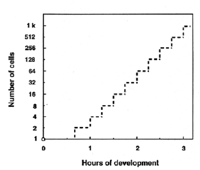

Modified from: Kimmel et al., 1955. Developmental Dynamics 203:253-310. Copyright © 1995 Wiley-Liss, Inc. Reprinted only by permission of Wiley-Liss, a subsidiary of John Wiley & Sons, Inc.
Fig. 5. Idealized blastomere number as a function of time after fertilization (at 28.5C), for the time when divisions occur fairly synchronously, before the midblastula transition at the tenth cycle.

Figure 5